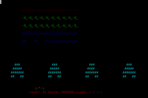

Kommandozeilen-Spiele
Dieser Artikel wurde für die folgenden Ubuntu-Versionen getestet:
Dieser Artikel ist größtenteils für alle Ubuntu-Versionen gültig.
Zum Verständnis dieses Artikels sind folgende Seiten hilfreich:
|  |
| nInvaders - Variante von Space Invaders |
 Moderne Computerspiele werden immer grafik- und rechenintensiver – kurz: aufwändiger. Dabei tritt bisweilen in den Hintergrund, dass auch sehr einfache Spiele Spaß machen und fesseln können – zumindest, wenn ihre Grundidee gut ist und spannend umgesetzt wurde. Beispiele dafür finden sich insbesondere unter den Spielen, die nicht auf einen XServer angewiesen sind, die man also nur auf der Kommandozeile bzw. in der Shell spielen kann.
Moderne Computerspiele werden immer grafik- und rechenintensiver – kurz: aufwändiger. Dabei tritt bisweilen in den Hintergrund, dass auch sehr einfache Spiele Spaß machen und fesseln können – zumindest, wenn ihre Grundidee gut ist und spannend umgesetzt wurde. Beispiele dafür finden sich insbesondere unter den Spielen, die nicht auf einen XServer angewiesen sind, die man also nur auf der Kommandozeile bzw. in der Shell spielen kann.
Im Folgenden eine kleine Liste mit besonders schönen derartigen Spielen. Alle vorgestellten Spiele befinden sich in den offiziellen Paketquellen. Daher ist die Installation besonders einfach: man muss nur den jeweiligen Paketnamen aus der folgenden Tabelle verwenden. Ein Beispiel:
sudo apt-get install ninvaders
| Spiele für die Kommandozeile | ||
| Spielname | kurze Beschreibung | Paketname |
Angband  | textbasiertes Dungeon-Spiel, Nachfolger von Moria | angband (multiverse) |
| BSDgames | Spielesammlung, u.a. Tetris (Start mit: tetris-bsd) | bsdgames (universe) |
| Crawl | textbasiertes Dungeon-Spiel | crawl (universe) |
| dopewars | Drogendealerkarriere starten; siehe auch diesen Blogbeitrag  | dopewars (universe) |
| Empire | Strategiespiel | empire (universe) |
| Greed | Zahlenspiel | greed (universe) |
| Mancala | Brettspiel | mancala (universe) |
| Moon-Buggy | mit Mondfahrzeug über Krater springen | moon-buggy (universe) |
| Nethack | textbasiertes Dungeon-Spiel | nethack-console (universe) |
| nInvaders | ncurses-Variante des Weltraum-Ballerspiels Space Invaders | ninvaders (universe) |
| 0verkill | 2D-Action-Deathmatch-Spiel in ASCII-Art | overkill (universe) |
| Pacman | klassischer Pacman-Klon | pacman4console (universe) |
| ski | rückwärts Skifahren | ski (universe) |
| Slashem | NetHack-Variante | slashem (universe) |
| TINT | Tetris-Klon | tint (universe) |
| Troubles of Middle Earth | textbasiertes Dungeon-Spiel, Nachfolger von Angband | tome (multiverse) |
Links¶
Eric Raymond's open-source collection
- Weitere SpielettyGames - Games on the Linux console
- Noch mehr SpieleSpiele
 Übersichtsseite
ÜbersichtsseiteShell/Anwendungen - Übersicht zu Programmen für die Shell
- Erstellt mit Inyoka
-
 2004 – 2017 ubuntuusers.de • Einige Rechte vorbehalten
2004 – 2017 ubuntuusers.de • Einige Rechte vorbehalten
Lizenz • Kontakt • Datenschutz • Impressum • Serverstatus -
Serverhousing gespendet von